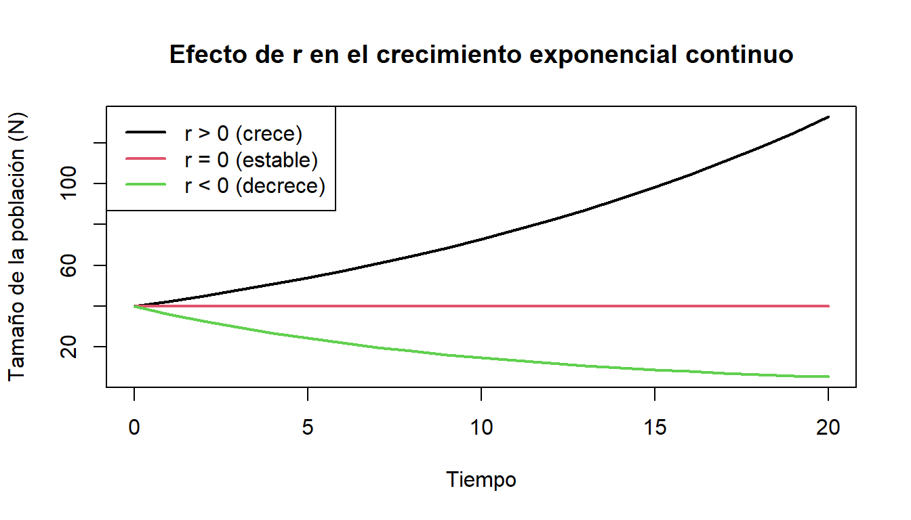
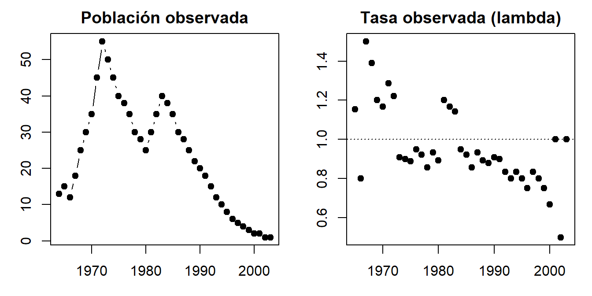
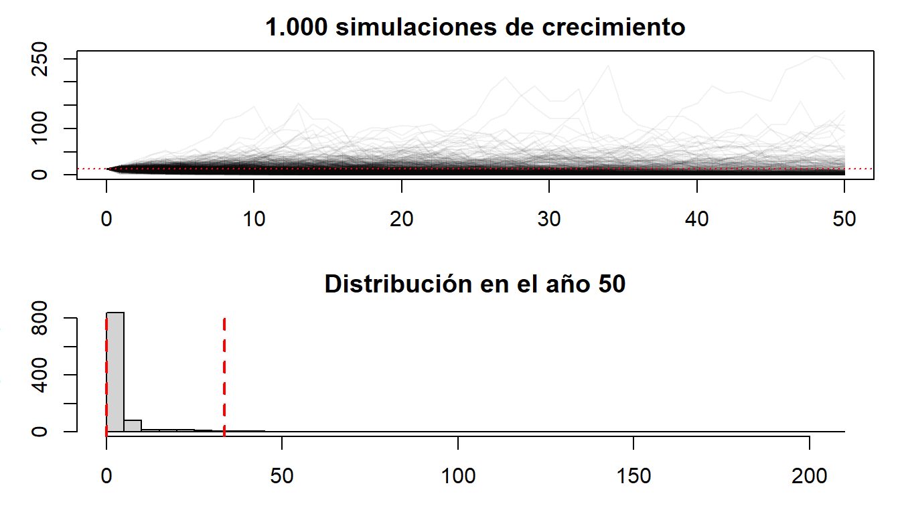
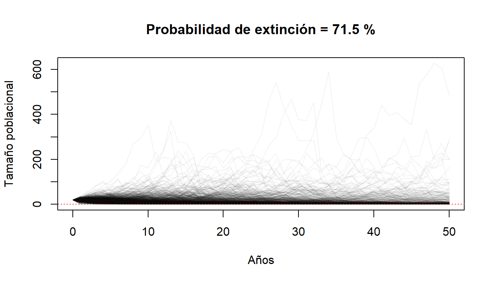
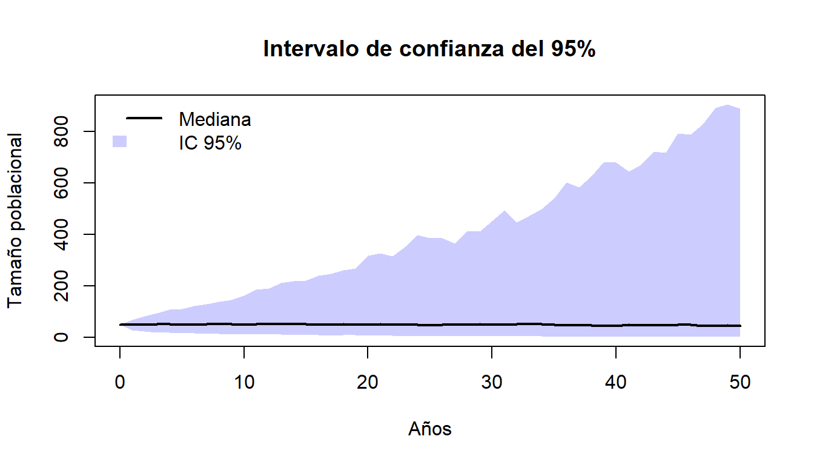
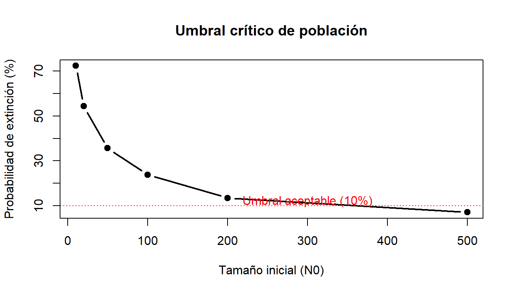

Crecimiento exponencial continuo y simulaciones estocásticas
1. Una pregunta
En un laboratorio de la UTPL, un estudiante pone 1.000 bacterias E. coli en una caja de Petri. Al día siguiente, encuentra \(10^{10}\) bacterias. La población se multiplicó por 10 millones en 24 horas.
Pregunta: ¿cómo describimos este crecimiento? ¿Se reproduce la población en un solo evento al día, o de forma continua?
A primera vista, el modelo geométrico que vimos en la lectura anterior podría servir: \(\lambda = 10^7\) por día. Pero hay un problema: las bacterias no se reproducen todas al mismo tiempo. Se dividen de forma continua y asíncrona, cada una en su propio momento. El modelo geométrico, que asume eventos reproductivos discretos, no captura esa continuidad.
En esta lectura veremos el modelo exponencial continuo, que describe poblaciones con reproducción continua, y las simulaciones estocásticas, que incorporan la variación natural en las tasas de crecimiento.
2. Del modelo geométrico al exponencial continuo
2.1 El problema de la periodicidad
El modelo geométrico asume que la población se reproduce en eventos discretos: una vez al año, una vez por estación, una vez por ciclo. Pero muchas poblaciones no funcionan así.
Ejemplos locales: - Bacterias y otros microorganismos, que se dividen continuamente - Insectos con generaciones superpuestas - Poblaciones humanas, que tienen nacimientos y muertes todos los días
NoteLa idea clave
El crecimiento geométrico depende de la periodicidad que asumimos. Si asumimos un evento reproductivo por año, la tasa es anual. Si asumimos dos eventos por año, la tasa se divide en dos. Si asumimos infinitos eventos, llegamos a una constante: \(e\).
2.2 La descomposición de la tasa
Supongamos que una población tiene \(\lambda = 1,5\) anual. Eso significa que crece un 50% por año.
¿Qué pasa si la reproducción ocurre en dos eventos al año?
\[N_1 = N_0 \left(1 + \frac{0,5}{2}\right)^2 = N_0 (1,25)^2 = N_0 \cdot 1,5625\]
Con dos eventos, la población crece un 56,25% anual, no un 50%. A medida que aumentamos el número de eventos, el crecimiento se acerca a un límite.
2.3 La constante \(e\)
Si el número de eventos reproductivos tiende a infinito:
\[\lim_{n \to \infty} \left(1 + \frac{r}{n}\right)^n = e^r\]
Donde \(e \approx 2,718\) es la base de los logaritmos naturales.
El modelo exponencial continuo se escribe así:
\[N_t = N_0 \cdot e^{rt}\]
Donde:
- \(N_t\) = tamaño de la población en el tiempo \(t\)
- \(N_0\) = tamaño inicial
- \(r\) = tasa intrínseca de crecimiento (per cápita, instantánea)
- \(t\) = tiempo
- \(e\) = constante de Euler (\(\approx 2,718\))
Interpretación de \(r\):
\(r > 0\): la población crece
\(r = 0\): la población se mantiene estable
\(r < 0\): la población decrece
NoteLa conexión con el modelo geométrico
En la lectura anterior vimos que \(\lambda = e^r\), o equivalentemente \(r = \ln(\lambda)\). El modelo geométrico y el exponencial continuo describen el mismo proceso, pero con distinto supuesto sobre la periodicidad de la reproducción.
3. Ajustando el modelo a datos reales
3.1 Calcular \(r\) a partir de datos
Si tenemos una serie de tamaños poblacionales en el tiempo, podemos calcular \(r\) para cada intervalo:
\[r = \ln\left(\frac{N_{t+1}}{N_t}\right)\]
Ejemplo: una población de mariposas con estos datos:
| Tiempo | \(N_t\) | \(\lambda\) | \(r\) |
|---|---|---|---|
| 0 | 10 | — | — |
| 1 | 25 | 2,5 | \(\ln(2,5) \approx 0,916\) |
| 2 | 89 | 3,56 | \(\ln(3,56) \approx 1,270\) |
| 3 | 160 | 1,80 | \(\ln(1,80) \approx 0,588\) |
| 4 | 312 | 1,95 | \(\ln(1,95) \approx 0,668\) |
TipPaso 1 para el estudiante
Con los datos de la tabla, verifiquen el cálculo de \(r\) para el intervalo 2 → 3. ¿Coincide con el valor mostrado?
3.2 La media geométrica de \(r\)
Como \(r\) varía entre intervalos, necesitamos un valor promedio. Al igual que con \(\lambda\), la media geométrica es más adecuada que la aritmética:
\[\bar{r} = \left(\prod r_i\right)^{1/n}\]
Ejemplo: con los valores de la tabla: \(\bar{r} \approx 0,82\).
TipPaso 2 para el estudiante
Calculen la media aritmética de los \(r\) de la tabla. Compárenla con la media geométrica. ¿Cuál es mayor? ¿Por qué?
3.3 Proyección con \(r\)
Con \(\bar{r}\), podemos proyectar la población:
\[N_t = N_0 \cdot e^{\bar{r} \cdot t}\]
Ejemplo: con \(N_0 = 10\) y \(\bar{r} = 0,82\):
| Tiempo | \(N_t\) proyectado |
|---|---|
| 5 | 604 |
| 10 | 36.500 |
| 20 | \(1,3 \times 10^8\) |
WarningEl problema del crecimiento indefinido
Con \(r > 0\), la población crece exponencialmente y, en teoría, se vuelve infinita. En la práctica, esto no ocurre: los recursos se agotan, aparecen depredadores o enfermedades, y el crecimiento se frena. Eso lo veremos con el modelo logístico.
3.3 Proyección con \(r\)
Con \(\bar{r}\), podemos proyectar la población:
\[N_t = N_0 \cdot e^{\bar{r} \cdot t}\]
Ejemplo: con \(N_0 = 10\) y \(\bar{r} = 0,82\):
| Tiempo | \(N_t\) proyectado |
|---|---|
| 5 | 604 |
| 10 | 36.500 |
| 20 | \(1,3 \times 10^8\) |
3.4 ¿Cuánto tarda la población en alcanzar un tamaño específico?
A veces no nos interesa el tamaño futuro, sino cuánto tiempo tarda la población en alcanzar un tamaño determinado. Por ejemplo: ¿en cuántos años la población de mariposas llegará a 1.000 individuos?
Para responder, despejamos \(t\) de la ecuación exponencial:
\[N_t = N_0 \cdot e^{rt}\]
\[\frac{N_t}{N_0} = e^{rt}\]
\[\ln\left(\frac{N_t}{N_0}\right) = rt\]
\[t = \frac{\ln(N_t / N_0)}{r}\]
Ejemplo: con \(N_0 = 10\) y \(r = 0,82\), ¿cuánto tarda la población en llegar a 1.000 individuos?
\[t = \frac{\ln(1000 / 10)}{0,82} = \frac{\ln(100)}{0,82} \approx \frac{4,605}{0,82} \approx 5,62 \text{ años}\]
NoteEl tiempo de duplicación
Un caso particular importante es el tiempo de duplicación: cuánto tarda la población en duplicar su tamaño.
\[t_{2} = \frac{\ln(2)}{r} \approx \frac{0,693}{r}\]
Ejemplo: con \(r = 0,82\), el tiempo de duplicación es \(0,693 / 0,82 \approx 0,85\) años (unos 10 meses).
TipPaso 3 para el estudiante
Con \(N_0 = 50\) y \(r = 0,05\), calculen: 1. ¿Cuánto tarda la población en llegar a 500 individuos? 2. ¿Cuál es el tiempo de duplicación?
¿Qué pasa con el tiempo si \(r\) se reduce a la mitad?
4. Simulaciones estocásticas: incorporando la variación
4.1 ¿Por qué simular?
Hasta ahora hemos usado modelos deterministas: un solo valor de \(\lambda\) o \(r\) produce una única trayectoria. Pero en la realidad, las tasas varían entre años, y esa variación tiene consecuencias importantes.
Pregunta: si \(\lambda\) varía entre 0,5 y 1,5, ¿la población crece o decrece a largo plazo?
NoteLa respuesta no es obvia
Si la media aritmética es 1,0, podríamos pensar que la población se mantiene estable. Pero la variación en sí misma puede reducir la tasa de crecimiento a largo plazo. Por eso necesitamos simular.
4.2 Simulación con tasas aleatorias
El procedimiento es:
- Calcular las tasas observadas (\(\lambda\) o \(r\)) a partir de datos reales.
- Para cada año simulado, elegir al azar una de las tasas observadas.
- Proyectar la población año a año con la tasa elegida.
- Repetir el proceso muchas veces (por ejemplo, 1.000 simulaciones).
- Analizar la distribución de resultados.

La tasa varía: hay años con \(\lambda > 1\) y años con \(\lambda < 1\).
4.3 Simulación en R
# 1. Calcular tasas observadas
obs_lambda <- count[-1] / count[-length(count)]
# 2. Simular 1.000 trayectorias de 50 años
simular_poblacion <- function(lambdas, N0, años = 50, sims = 1000) {
resultados <- matrix(NA, años + 1, sims)
resultados[1, ] <- N0
for (s in 1:sims) {
lambdas_sim <- sample(lambdas, años, replace = TRUE)
for (t in 1:años) {
resultados[t + 1, s] <- resultados[t, s] * lambdas_sim[t]
}
}
return(resultados)
}
sim <- simular_poblacion(obs_lambda, N0 = 13, años = 50, sims = 1000)4.4 Analizando los resultados
Después de simular, podemos responder:
- ¿Cuál es el tamaño esperado de la población en el año 50?
- ¿Cuál es el rango de tamaños posibles (intervalo de confianza)?
- ¿Cuál es la probabilidad de extinción?

TipPaso 3 para el estudiante
Con la simulación, calculen la probabilidad de extinción (proporción de simulaciones en las que \(N = 0\)). ¿Es alta o baja? ¿Qué nos dice eso sobre el riesgo de la población?
5. Aplicaciones en conservación
Las simulaciones estocásticas y el modelo exponencial no son solo ejercicios académicos: son herramientas clave en biología de la conservación. Veamos cuatro aplicaciones concretas.
5.1 Probabilidad de extinción
Una de las preguntas más importantes en conservación es: ¿cuál es la probabilidad de que una población se extinga en un plazo determinado?
Las simulaciones estocásticas permiten estimarla con un procedimiento sencillo:
- Se simulan muchas trayectorias (por ejemplo, 1.000), cada una con tasas de crecimiento elegidas al azar de las observadas.
- Se cuenta en cuántas de esas trayectorias la población llega a cero.
- La probabilidad de extinción es la proporción de simulaciones con \(N = 0\).
Ejemplo: si en 1.000 simulaciones de una población de aves, 230 terminan con \(N = 0\) en 50 años, la probabilidad de extinción es del 23%.
Note¿Por qué una población con \(r\) promedio positivo puede extinguirse?
Porque la variación en las tasas puede llevar a la población a cero en algunos escenarios, aunque el promedio sea positivo. La varianza de las tasas es tan importante como su media. Una población con \(r\) promedio positivo pero alta variabilidad puede tener un riesgo de extinción considerable.

TipPaso 4 para el estudiante
Con la simulación anterior, respondan:
- ¿Cuál es la probabilidad de extinción?
- ¿Qué pasa con esa probabilidad si la media de \(\lambda\) aumenta a 1,02?
- ¿Y si la desviación estándar aumenta a 0,5?
Discutan en grupo: ¿qué es más importante para la persistencia, la media o la varianza de las tasas?
5.2 Cuantificar la incertidumbre de las proyecciones
Los modelos deterministas dan una sola trayectoria. Las simulaciones dan muchas, y eso permite cuantificar la incertidumbre de las proyecciones.
¿Cómo se hace?
- Se simulan muchas trayectorias (por ejemplo, 500).
- Se calculan los percentiles 2,5% y 97,5% del tamaño poblacional en cada año.
- Esos percentiles definen un intervalo de confianza del 95%.
Ejemplo: si después de 50 años, el intervalo de confianza del 95% del tamaño poblacional es [0, 1.200], eso significa que, en el 95% de las simulaciones, la población terminó entre 0 y 1.200 individuos.

Note¿Por qué es importante?
Porque una proyección sin incertidumbre es una falsa certeza. En conservación, es tan importante saber cuál es el tamaño esperado como cuál es el rango de tamaños posibles. Los tomadores de decisiones necesitan ambos para evaluar riesgos y priorizar acciones.
TipPaso 5 para el estudiante
Con la simulación anterior, respondan:
- ¿Cuál es el tamaño mediano esperado en el año 50?
- ¿Cuál es el rango del intervalo de confianza del 95%?
- ¿La incertidumbre aumenta o disminuye con el tiempo? ¿Por qué?
5.3 Identificar umbrales críticos
En conservación, a menudo necesitamos saber: ¿cuál es el tamaño mínimo de población para que la especie persista?
Este concepto se llama población mínima viable (PMV). Se puede estimar con simulaciones:
- Se simulan poblaciones con distintos tamaños iniciales (\(N_0 = 10, 20, 50, 100, 200, 500\)).
- Se calcula la probabilidad de extinción para cada \(N_0\).
- Se identifica el \(N_0\) a partir del cual la probabilidad de extinción es aceptablemente baja (por ejemplo, < 10%).
Ejemplo: si la probabilidad de extinción es del 40% con \(N_0 = 20\) y del 5% con \(N_0 = 100\), la PMV estaría alrededor de 100 individuos.

Note¿Qué es un umbral aceptable?
No hay una respuesta única. Depende de la especie, del contexto y de los objetivos de conservación. Para especies en peligro crítico, se aceptan probabilidades de extinción muy bajas (por ejemplo, < 1% en 100 años). Para especies menos amenazadas, umbrales más altos pueden ser aceptables.
TipPaso 6 para el estudiante
Con la simulación anterior, respondan:
- ¿Cuál es el umbral de población a partir del cual la probabilidad de extinción es menor al 10%?
- ¿Qué pasa con el umbral si la media de \(\lambda\) disminuye a 0,95?
- ¿Cómo usarían esta información para tomar decisiones de conservación?
5.4 Tiempo para alcanzar un tamaño específico
En algunos casos, la pregunta no es sobre el futuro lejano, sino sobre cuánto tiempo tarda la población en alcanzar un tamaño determinado. Por ejemplo: ¿en cuántos años la población de mariposas llegará a 1.000 individuos? ¿Cuánto tarda en duplicarse?
Para responder, despejamos \(t\) de la ecuación exponencial:
\[N_t = N_0 \cdot e^{rt}\]
\[\frac{N_t}{N_0} = e^{rt}\]
\[\ln\left(\frac{N_t}{N_0}\right) = rt\]
\[t = \frac{\ln(N_t / N_0)}{r}\]
Ejemplo: con \(N_0 = 10\) y \(r = 0,82\), ¿cuánto tarda la población en llegar a 1.000 individuos?
\[t = \frac{\ln(1000 / 10)}{0,82} = \frac{\ln(100)}{0,82} \approx \frac{4,605}{0,82} \approx 5,62 \text{ años}\]
NoteEl tiempo de duplicación
Un caso particular importante es el tiempo de duplicación: cuánto tarda la población en duplicar su tamaño.
\[t_{2} = \frac{\ln(2)}{r} \approx \frac{0,693}{r}\]
Ejemplo: con \(r = 0,82\), el tiempo de duplicación es \(0,693 / 0,82 \approx 0,85\) años (unos 10 meses).
TipPaso 7 para el estudiante
Con \(N_0 = 50\) y \(r = 0,05\), calculen:
- ¿Cuánto tarda la población en llegar a 500 individuos?
- ¿Cuál es el tiempo de duplicación?
- ¿Qué pasa con el tiempo si \(r\) se reduce a la mitad?
5.5 Síntesis de las aplicaciones
| Aplicación | Pregunta que responde | Herramienta |
|---|---|---|
| Probabilidad de extinción | ¿Cuál es el riesgo de que la población desaparezca? | Simulaciones estocásticas |
| Cuantificar incertidumbre | ¿Cuál es el rango de tamaños posibles? | Percentiles de simulaciones |
| Identificar umbrales críticos | ¿Cuál es el tamaño mínimo viable? | Simulaciones con distintos \(N_0\) |
| Tiempo de alcance | ¿Cuánto tarda la población en llegar a un tamaño? | Despeje de \(t\) en el modelo exponencial |
NoteConexión con la conservación
Estas herramientas se usan en programas de conservación de especies amenazadas como Tremarctos ornatus en el Podocarpus, o para evaluar la viabilidad de poblaciones de Cedrela montana en fragmentos de bosque de la hoya de Loja. La simulación permite explorar escenarios (con y sin intervención) y priorizar acciones.
6. Síntesis y puente
El modelo exponencial continuo describe poblaciones con reproducción continua:
\[N_t = N_0 \cdot e^{rt}\]
Con \(r > 0\) la población crece; con \(r < 0\) decrece. La tasa \(r\) se relaciona con \(\lambda\) mediante \(r = \ln(\lambda)\).
Las simulaciones estocásticas incorporan la variación natural en las tasas y permiten estimar la probabilidad de extinción y la incertidumbre de las proyecciones. Son una herramienta clave en conservación.
En la próxima lectura veremos el modelo logístico, que incorpora la denso-dependencia y describe poblaciones que se estabilizan en una capacidad de carga.
Pregunta final: ¿qué especie de Loja le gustaría analizar con una simulación estocástica? ¿Qué preguntas de conservación podría responder?
7. Para profundizar
- Gotelli, N. J. (2008). A Primer of Ecology. 4th ed. Sinauer. Capítulo 1.
- Begon, M., Harper, J. L., & Townsend, C. R. (2006). Ecology: From Individuals to Ecosystems. Blackwell. Capítulo 6.
- Morris, W. F., & Doak, D. F. (2002). Quantitative Conservation Biology. Sinauer. Capítulo 3.
8. Preguntas de comprensión
- ¿Por qué el modelo geométrico no es adecuado para poblaciones con reproducción continua? Da un ejemplo local.
- ¿Qué representa la constante \(e\) en el modelo exponencial continuo?
- ¿Cómo se relacionan \(\lambda\) y \(r\)? Calcula \(r\) para \(\lambda = 1,8\).
- Si una población tiene \(r = 0,05\) por año, ¿cuánto tarda en duplicarse?
- ¿Por qué la media geométrica es más adecuada que la aritmética para promediar \(r\)?
- ¿Qué ventaja tienen las simulaciones estocásticas sobre los modelos deterministas?
- ¿Cómo se estima la probabilidad de extinción a partir de una simulación?
- ¿Por qué una población con \(r\) promedio positivo puede tener alta probabilidad de extinción?
- ¿Qué aplicaciones tiene la simulación estocástica en conservación?
- ¿Cómo se relaciona el modelo exponencial continuo con el modelo geométrico que vimos en la lectura anterior?